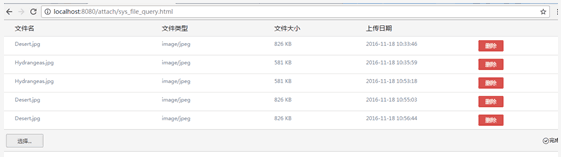
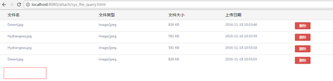
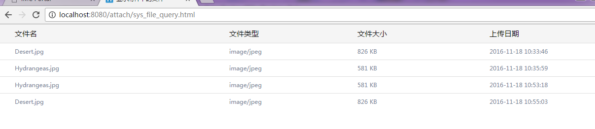
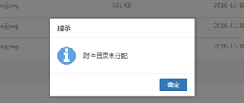

附件上传的相关说明
附件上传是一个结合kendoUI的upload组件和freemarker的标签化实现。可以在任何页面的主体内引用生成的标签，该标签会生成一个上传文件的信息以及一个上传按钮，该标签集文件的上传，下载和删除为一体。
附件上传实现的功能：
文件上传文件删除文件下载
1.文件上传
文件上传包含文件大小和文件类型验证，只有验证通过才能进行上传，文件上传可以是单文件，也可以是多文件，文件的大小和文件的类型是从后台中动态获取的。
2.文件删除
该标签只支持单文件删除，文件每一次删除都需要验证token的值，必须fileId和token同时满足的情况下才能删除。每一次删除都会提示“确认删除吗”若删除成功则提示“删除成功”。
3.文件下载
点击文件名进行下载，文件下载也是需要验证token的值
附件上传的标签参数说明
标签：
${attachmentProvider.getAttachHtml("IMG2","1",base.locale,base.contextPath,true,false)}
| 参数 | 参数说明 |
|---|---|
| sourceType | 附件所属业务类型，category的唯一索引，即IMG2 |
| sourceKey | 附件所属业务id,即1 |
| base.locale | 语言环境 |
| base.contextPath | 项目的根路径 |
| enableRemove | 是否允许删除 |
| enableUpload | 是否允许上传 |
enableRemove和enableUpload，都是boolean类型的。
souceType可以唯一确定一个文件分类目录
souceType和souceKey可以唯一确定文件分类下的附件的目录。
如何调用生成的标签
1.允许上传和删除
在html的页面的body中调用标签1
<body>
<div style="">
${attachmentProvider.getAttachListHtml("IMG2","1",base.locale, base.contextPath)}
</div>
</body>
结果如下：

2.不允许上传
在html页面中调用标签2，并将参数enableUpload设为false
<body>
<div style="">
${attachmentProvider.getAttachHtml("IMG2","1",base.locale,base.contextPath,true,false)}
</div>
</body>
结果如下

3.不允许删除
在html页面中调用标签2，并将参数enableRemove设为false
<body>
<div style="">
${attachmentProvider.getAttachHtml("IMG2","1",base.locale, base.contextPath,false,true)}
</div>
</body>
结果如下

4.不允许删除和下载
在html页面中调用标签2，并将参数enableRemove和enableUpload都设为false
<body>
<div style="">
${attachmentProvider.getAttachHtml("IMG2","1",base.locale, base.contextPath,false,false)}
</div>
</body>
结果如下

由于页面中table和上传按钮的id都是采用uuid或uuid拼接完成的，所以同一个页面中可以调用同一个标签，只要传入的参数不同即可。
服务端提示信息
1.附件目录未分配（sourceType或sourceKey为空）
文件的附件目录是由sourceType和sourceKey唯一确定的 若在模板文件中传递的sourceType或者sourceKey为空则报错。
